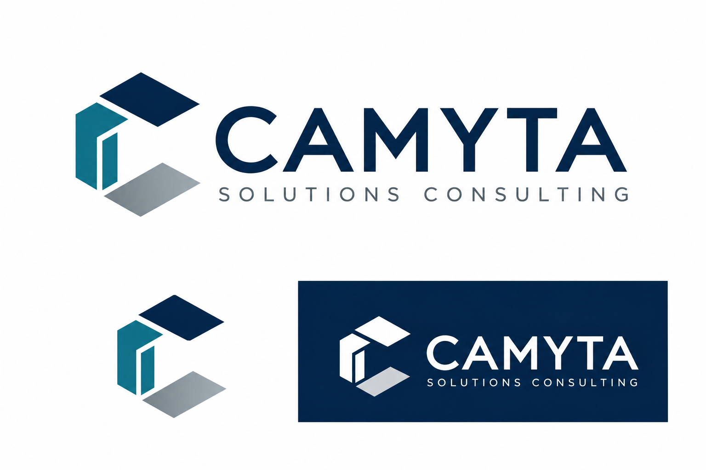

“We know the problem.
Not the next step.”
Bring structure to the questions before committing to an implementation.

BUSINESS TECHNOLOGY, WITH DIRECTION.
Your business knows what needs to change.
We help turn that ambition into a plan people can deliver.
Discovery. Architecture. Delivery leadership.
One connected conversation.
THE SPACE WE WORK IN
Good projects need more than a schedule. They need the right questions, a shared understanding, and someone who can connect the dots.
We bridge the business and technical sides of change, translating goals into requirements, designs, decisions, and an actionable path forward.
Bring structure to the questions before committing to an implementation.
Build a common language for priorities, requirements, and technical tradeoffs.
Make scope, ownership, dependencies, and open decisions visible.
EXPERTISE, CONNECTED.
Engage us for a focused need or a defined part of your project. Each engagement starts with clear responsibilities and deliverables.
Experience in content management and workflow informs our approach. Your business problem, not a single platform, leads the conversation.
Understand the people, processes, and needs behind the request. Turn scattered input into a shared definition of the problem.
Define the work before assumptions become commitments. Establish a practical baseline for decisions, effort, and delivery.
Connect business requirements to a solution that fits the surrounding systems and the people who will support it.
Keep people, priorities, and decisions connected while the work moves forward. Coordinate within an explicitly agreed role and capacity.
Validate the solution against the original need. Prepare the business and support teams to take ownership of what comes next.
A METHOD, NOT A MYSTERY.
Explore the work behind each phase.
A connected approach, with room to engage
exactly where you need support.
Listen to the people closest to the process. Understand the business problem, existing systems, constraints, and desired outcomes before prescribing a solution.
THE CENTRAL QUESTION
What needs to work differently?
A shared understanding of the problem worth solving.
An example of our thinking, not a client project.
DIRECT EXPERTISE. PERSONAL ACCOUNTABILITY.
Led by Carlos Lopez, a professional services leader and solution architect with a background in OnBase and business technology delivery.
From a discovery workshop to a technical design review, the focus stays the same: understand what the business needs, make the work clear, and help the right people move it forward.
HOW WE SHOW UP
Ask the right questions. Define the need. Make decisions understandable before adding technology.
Follow through, communicate honestly, and raise risks early with a practical next step.
Respect the client’s goals, budget, existing tools, and ability to maintain the solution.
Design with the people who will use and support the systems. Their experience matters.
Make documentation, testing, and knowledge transfer part of delivery, not an afterthought.
Help organizations turn business needs into clear requirements, practical solutions, and well-managed projects, with hands-on guidance from discovery through delivery.
EVERY GOOD PROJECT STARTS SOMEWHERE.
You don’t need all the answers to start.
A few good questions are enough.